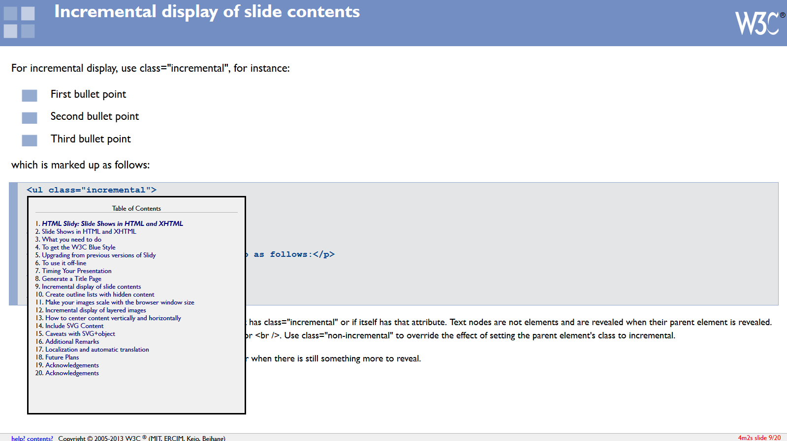
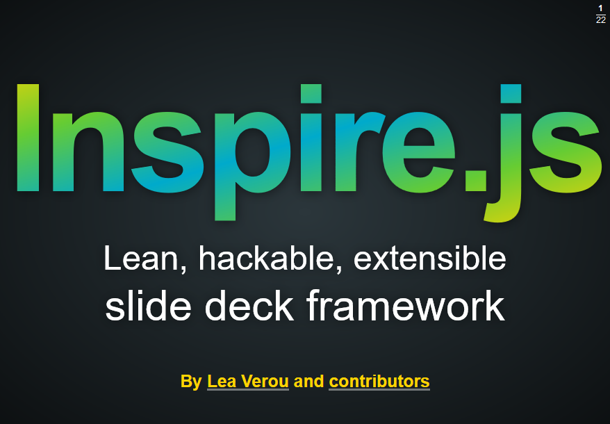

The Origins of Slideshows
In 1980 developers started to work on early prototypes of presentation software.
Intended for artists to design slides for projectors, which had to be printed.
Forethought, Inc. changed that in 1987 with the release of
PowerPoint for McIntosh.
Splash screen and example slide of PowerPoint 1.0.Screenshot made by the author using
emulation .
Example slide of PowerPoint 1.0.Screenshot made by the author using
emulation .
Modern Challenges
Top Platforms: Windows 10, Android 10, iOS14
Top Screen Resolutions: 1366x768, 640x360, 1920x1080
Web Fundamentals
HTML, CSS, and JavaScript.
The Document Object Model (DOM) can be displayed as a tree structure, called the DOM tree.Diagram created by the author in R.
Front-End Web Technologies
Sassy CSS.
TypeScript.
Node.js + npm
Gulp
SCSS allows for shared variables and mixins.Screenshot taken by the author.
TypeScript brings a type system to JavaScript.Screenshot taken by the author.
Slidy & Slidy2
Developed by Dave Raggett in 2005.
One of the first HTML based presentation frameworks.
Slides are defined in blocks <div class="slide">...</div>.
Includes: show.css, slidy.js, print.css (optional)
Example

Slidy2 features an auto-generated table of contents.Screenshot taken from Slidy2 .
The Four Main Classes of Modern Slide Decks
Text-Based slide decks.
JavaScript-Based slide decks.
Hosted slide decks.
Responsive slide decks.
1. Text-Based Slide Decks
Do not require the slide creator to possess any knowledge about
scripting or styling their slides.
Either use pure plaintext or
Markdown .
The main advantage of this approach is the fast and easy way to write and
read slides.
The trade-off is less flexibility and modifiability.
Slidifier
Developed by Holger Ludvigsen.
Defines its own plaintext syntax for certain features.
Example
Screenshot taken from Slidifier .
2. JavaScript-Based Slide Decks
Heavy focus on scripting.
Wide range of functionality.
They often make use of third party packages (jQuery).
Many of them can be installed using Node.js and npm.
Inspire.js
Developed by Lea Verou.
Lean and puts a focus on reusability.
Many unique features:
Video annotations, live code examples, reuse a slide by its ID.
Example

Screenshot taken from Inspire.js .
3. Hosted Slide Decks
Are neatly packed into a web application.
Also serve the tools for creating slides.
Everything is in the cloud (pros and cons).
Beautiful.ai
Offers AI assistance during the slide creation process.
Smart slide templates are provided: for charts and diagrams.
Offers a free image and icon library.
Paid plans include analytic tools.
Beautiful.ai offers tools for creating charts.Screencapture taken from Beautiful.ai .
4. Responsive Slide Decks
Ethan Marcotte describes the main three pillars of Responsive Web
Design as flexible grids, fluid images, and media queries.
Makes it possible to respond to changes in the browser environment and
adjust how a web site or application gets displayed accordingly.
Can run on a multitude of display sizes and sniff for features rather than requiring them.
Scrolldeck.js
Developed by John Polacek.
Stacks slides vertically rather than going through them horizontally.
Support for animations, incremental lists, and an optional sticky
navigation header.
Example
Scrolldeck.js displaying two images with parallax scrolling.Screenshot taken from Scrolldeck.js .
Rslidy
Drop-in replacement for W3C Slidy and Slidy2.
Slides are defined in blocks <div
class="slide">...</div> or <section>...</section>.
Responsive HTML5, CSS3, JavaScript (TypeScript). No other dependencies.
Lightweight.
Rslidy File Sizes
File
Size
Minified Size
Minified and Gzipped Size
rslidy.js
133,306 bytes
70,223 bytes
15,069 bytes
rslidy.css
26,086 bytes
17,270 bytes
4,362 bytes
Overview of Rslidy's Features
Slide Viewer:
Animated slide transitions.
Overview panel.
Table of contents panel.
Navigable progress bar.
All slides view.
Help page.
Responsive Layout and Interactions:
Portrait + landscape.
Swipe, pinch, tap.
Tilt, shake.
Keyboard.
Mouse pointer, mouse wheel.
Image Viewer
Rslidy is comprised of several modules, whose dependencies are illustrated here.Diagram created by the author in R.
Settings
Toggle features.
Adjust font sizes.
Low light mode.
Print style sheet.
Both stored in localstorage (if available).
Accessibility
ARIA (Accessible Rich Internet Applications) roles and properties, updated at runtime.
Accessible HTML5 elements, such as <nav> and <main>.
Fully navigable with keyboard shortcuts.
Font sizes are freely adjustable.
Screen reader friendly. (Tested with JAWS and NVDA. Special thanks go to Christopher Kopel.)
Gesture Support
Swipe.
Margin tap (similar to that of e-readers).
Tilt/Tip.
Shake.
Tilt and tip gestures can be used for navigation (in addition to swipe and tap gestures).Illustration made by the author using Inkscape.
Math Equations using MathJax
When \(a \ne 0\), there are two solutions to \(ax^2 + bx + c = 0\) and they
are \[x = {-b \pm \sqrt{b^2-4ac} \over 2a}.\]
Rendered from this HTML snippet:
<p>
When \(a \ne 0\), there are two solutions to \(ax^2 + bx + c = 0\) and they are
\[x = {-b \pm \sqrt{b^2-4ac} \over 2a}.\]
</p>
Source Code Highlighting using Prism.js
<body>
<section>
<h1>Source Code Highlighting!</h1>
<h2>Or through third-party tools.</h2>
</section>
</body>Inline code highlighting
background-color: rgba(0, 0, 0, 0.9);
is also possible.
Including Live Code for Interactive Content
Testing
Feature testing via several small example slide decks.
Device testing with OnePlus 5T, Samsung Galaxy S3, Apple iPad Mini 2.
User testing:
The thinking aloud test was captured both by external camera and screen recording.Photograph from Droisner Angelika
and Korotaj Ana (and used under the terms of a Creative Commons Attribution 4.0 License).
Future Work
Remote control support.
Screen wake lock.
Speaker view, with timer and notes.
Container queries.
Web Speech API.
Accessibility Object Model.
Generic Sensor API.
Progressive Web App.
Thanks for your attention!
Questions?